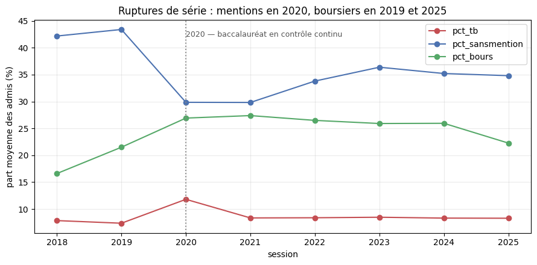

Bloc 3 · Pipelines de données
Le pipeline, de la source publique à l'écran du conseiller
Trois connecteurs, quatre familles de contrôle qualité, deux transformations dbt, un job de réduction Sirene, une chaîne de réconciliation de nomenclatures et quatre DAG Airflow qui les enchaînent, avec reprise sur erreur et blocage démontrés en production.
Vue du pipeline
Le chemin d'une donnée va du producteur public à l'écran du conseiller en trois couches — bronze, silver, gold — puis vers le modèle et le service. Deux points sont bloquants : le contrôle qualité juste après l'ingestion, et le contrat anti-fuite entre gold et la table de variables.
flowchart TB
subgraph PROD["Producteurs publics"]
direction LR
P1["MESR
Parcoursup"]
P2["INSEE
Sirene"]
P3["ONISEP · France Compétences
France Travail"]
end
subgraph BRONZE["BRONZE — data/raw · immuable"]
direction LR
B1[("Exports Parcoursup
8 millésimes, CSV")]
B2[("Stock Sirene
Parquet")]
B3[("Référentiels
CSV, XLSX")]
end
Q1{{"STOP — contrôles qualité
schéma · complétude · cohérence · fraîcheur
par source"}}
subgraph SILVER["SILVER — data/interim · réconcilié"]
S1[("8 millésimes harmonisés
fichier DuckDB, via dbt")]
end
subgraph GOLD["GOLD — data/processed · prêt à modéliser"]
direction TB
G1[("Étoile : 1 table de faits
+ 4 dimensions
Parquet")]
G2[("Agrégats Sirene
commune x NAF")]
G3[("Chaîne NAF ↔ ROME ↔ formation
couverture mesurée")]
G4[("Table de variables
+ label + pondération")]
end
Q2{{"STOP — contrat anti-fuite
liste blanche des colonnes
de la session prédite ;
tout le reste décalé d'une session"}}
subgraph MODELE["Modèle"]
direction TB
M0["Baseline
taux de la session précédente"]
M1["Entraînement LightGBM
split temporel strict"]
M2["Évaluation, calibration,
équité, ablation"]
M3["Précalcul TreeSHAP
par cellule"]
M4["Dérive
PSI médian, seuil 0,20"]
end
subgraph SERVICE["Service"]
direction TB
SC["Score à trois termes
affinité x accessibilité x débouchés"]
API["Service de matching
+ écran conseiller"]
JOURNAL[("Journal d'inférence
article 12, purge par paliers")]
end
MLFLOW["Registre d'expériences
paramètres, métriques, empreinte du commit"]
P1 --> B1
P2 --> B2
P3 --> B3
B1 --> Q1
B2 --> Q1
B3 --> Q1
Q1 -->|"conforme"| S1
Q1 -->|"conforme"| G2
Q1 -->|"conforme"| G3
Q1 -.->|"non conforme : la chaîne s'arrête ici"| ARRET["Échec de tâche
diagnostic écrit, aucune reprise :
un schéma cassé ne se répare pas
en retentant"]
S1 --> G1
G1 --> Q2
Q2 --> G4
G4 --> M0
G4 --> M1
M0 --> M2
M1 --> M2
M1 --> M3
G4 --> M4
M1 --> MLFLOW
M2 --> MLFLOW
M1 --> SC
G2 --> SC
G3 --> SC
M3 --> API
SC --> API
API --> JOURNAL
classDef bronze fill:#8c6239,stroke:#5e4126,color:#fff
classDef silver fill:#9aa0a6,stroke:#6b7075,color:#fff
classDef gold fill:#c99700,stroke:#8f6c00,color:#fff
classDef stop fill:#c0392b,stroke:#8b271c,color:#fff
classDef calcul fill:#438dd5,stroke:#2e6295,color:#fff
classDef externe fill:#8a8a8a,stroke:#5c5c5c,color:#fff
class B1,B2,B3 bronze
class S1 silver
class G1,G2,G3,G4 gold
class Q1,Q2,ARRET stop
class M0,M1,M2,M3,M4,SC,API,MLFLOW,JOURNAL calcul
class P1,P2,P3 externe
Quatre chaînes, quatre cadences
Le pipeline n'est pas un graphe unique, mais quatre graphes indépendants, un par cadence réelle de publication. Une cadence unique alignée sur la source la plus fréquente aurait retéléchargé Parcoursup et Sirene tous les jours — l'idempotence de l'ingestion l'aurait absorbé sans rien casser, un fichier déjà présent et intact n'est pas retéléchargé — mais la chaîne aurait rejoué les contrôles qualité et occupé un créneau d'ordonnancement pour rien 364 jours sur 365 côté Parcoursup, 29 sur 30 côté Sirene. Les cadences sont dans configs/base.yaml, section orchestration.planification, jamais dans le code Python.
| DAG | Cadence | Tâches, dans l'ordre |
|---|---|---|
edumatch_parcoursup | annuelle | ingérer → qualité → silver → gold → variables → dérive → réentraîner → évaluer |
edumatch_sirene | mensuelle | ingérer → qualité → agréger commune × NAF |
edumatch_referentiels | quotidienne | ingérer → qualité → réconcilier NAF ↔ ROME ↔ formation |
edumatch_audit_purge | quotidienne | purger le journal d'inférence |
Les trois propriétés que le pipeline doit tenir
| Propriété | Mécanisme |
|---|---|
| Blocage qualité | Contrôle placé juste après l'ingestion, avant toute transformation ; une erreur définitive empêche par la règle de déclenchement Airflow (trigger_rule: all_success) toute tâche en aval, sans code supplémentaire |
| Contrat anti-fuite | Liste blanche des colonnes autorisées sur la session prédite ; toute autre colonne est décalée d'une session ou fait échouer la construction |
| Idempotence et reprise | Écriture atomique partout ; reprise distinguant erreur transitoire (retentée, temporisation croissante) et définitive (remontée immédiatement) |
Ce que le diagramme ne masque pas : deux millésimes sur huit (2018, 2019) ne produisent aucun fait — le numérateur ventilé par type de baccalauréat n'existe pas avant 2020, le label n'est calculable que sur six sessions, limite de la source reportée sur la page données. La chaîne NAF ↔ ROME ↔ formation ne rejoint pas Parcoursup par une clé — détaillé plus bas. Le modèle n'a pas encore battu sa baseline, comparaison rapportée telle qu'elle est mesurée sur la page modèle. La surveillance d'exécution reste locale : la dérive est calculée et écrite, aucune alerte n'est encore routée vers un système d'observabilité, point également relevé sur la page architecture.
Ingestion
Trois connecteurs opérationnels — Parcoursup, Sirene, référentiels — partagent des primitives communes (src/edumatch/ingestion/_flux.py) : session HTTP, téléchargement en flux par blocs, empreinte SHA-256, écriture atomique, manifeste. Chacun a sa propre stratégie de résolution d'URL, dictée par la façon dont la source publie ses fichiers, pas par préférence.
Trois sources, cinq stratégies de résolution d'URL
| Parcoursup | Sirene | Référentiels — IDÉO | Référentiels — RNCP | Référentiels — France Travail | |
|---|---|---|---|---|---|
| Forme de l'URL | Gabarit fixe + identifiant du millésime | Résolue par requête au catalogue | URL fixe, un fichier par jeu | Résolue par requête au catalogue, puis extraction d'un membre d'archive ZIP | Résolue par titre de ressource dans le catalogue |
| Ce qui varie | Un identifiant par millésime, stable une fois publié | L'URL entière, republiée chaque mois | Rien | L'URL de l'archive, republiée chaque jour | Le nom du fichier, à chaque édition du ROME |
| Grain d'idempotence | Un fichier par millésime, jamais réécrit | Un fichier par stock mensuel | Un fichier par jeu, écrasé si le contenu a changé | Un fichier par date de publication, jamais écrasé | Empreinte SHA-256 du contenu |
Parcoursup republie un export par session sous un identifiant qui, une fois connu, ne change plus : un gabarit d'URL en configuration reste vrai d'une exécution à l'autre. Sirene republie un stock complet chaque mois sous un chemin qui contient l'horodatage de publication : coder ce chemin en dur casserait le connecteur dès le mois suivant. Le RNCP cumule deux difficultés : l'URL change à chaque republication (quotidienne) et se résout par requête au catalogue, et le fichier utile est extrait d'une archive ZIP plutôt que téléchargé directement. La résolution dynamique n'est donc pas une préférence uniforme, c'est la stratégie qui survit à la façon dont chaque source publie ses fichiers (ADR 0005).
Le RNCP — un fichier daté, jamais écrasé
Le RNCP est un export quotidien dont le contenu évolue chaque jour. Appliquer la même mécanique que Sirene — un seul fichier écrasé à chaque republication — poserait un problème que Sirene ne pose pas : une table dérivée construite un jour donné à partir de l'export RNCP (la chaîne NAF ↔ ROME ↔ formation) doit rester rejouable sans reprocher la source. Le connecteur conserve donc un fichier par date de publication (rncp_AAAA-MM-JJ.csv), avec une entrée de manifeste par date : l'idempotence ne porte pas sur « le contenu a-t-il changé » mais sur « ai-je déjà l'export de ce jour ». L'accumulation dans le temps (~9 Mo par jour) n'a pas de politique de rétention à ce jour — question ouverte, pas hypothétique, puisque le DAG edumatch_referentiels exécute désormais cette ingestion à cadence quotidienne (ADR 0007).
L'archive quotidienne contient dix fichiers ; le connecteur en extrait deux : le CSV standard, et depuis cette étape le second membre rncp_rome_AAAA-MM-JJ.csv, qui relie chaque fiche RNCP à un ou plusieurs codes ROME (mesuré sur l'export du 30 août 2026 : 4 353 036 octets, Licence Ouverte v2.0) — maillon central de la réconciliation des nomenclatures décrite plus bas. France Travail publie par ailleurs, sur data.gouv, une table de correspondance ROME/NAF résolue par titre de ressource plutôt que par nom de jeu ou préfixe (fichier constaté : rome-arborescence-des-secteurs-naf-juin-2026.xlsx, 112 896 octets, Licence Ouverte v2.0), seul format publié pour cette table (xlsx), dont le contrat vérifié après téléchargement est la validité du conteneur ZIP sous-jacent.
Vocabulaire commun d'erreur : transitoire contre définitif
Les connecteurs distinguent deux natures d'échec par un vocabulaire partagé (ErreurTransitoire, ErreurDefinitive) que chaque connecteur combine par héritage à sa propre classe d'erreur : coupure réseau ou catalogue injoignable côté transitoire, catalogue mal formé ou millésime non configuré côté définitif. Sans cette distinction, un DAG qui capturerait une seule classe d'erreur retenterait aveuglément un échec qu'aucun nombre de tentatives ne peut résoudre. Avec elle, l'orchestration écrit une seule fois except ErreurTransitoire: retenter() / except ErreurDefinitive: alerter(), valable pour tous les connecteurs (ADR 0006).
Volumétries mesurées
| Source | Lignes / fichiers | Poids |
|---|---|---|
| Parcoursup, 8 millésimes | 104 274 formations | 82 Mo |
| Sirene, 4 fichiers stock du 01/08/2026 | 43 896 818 établissements (StockEtablissement) | 4,63 Go (4 fichiers) |
| Référentiels (IDÉO, RNCP, France Travail) | — | quelques Mo |
Échantillons versionnés (data/samples/) | 17 fichiers | 1,2 Mo |
Sur les 43 896 818 établissements Sirene, seuls 16 715 258 sont actifs (38,1 %) et 2 436 624 sont actifs et employeurs (5,6 %) — c'est ce dernier sous-ensemble que retiennent les filtres du projet. Mesuré par lecture de 2 colonnes sur 54 en 35,4 secondes, un temps qui dimensionne le traitement plus que le résultat filtré lui-même et qui justifie le choix d'un traitement Spark local plutôt qu'un service managé pour ce job mensuel (ADR 0002).
Les deux garanties de tout connecteur
Idempotence par empreinte. Avant tout téléchargement, le connecteur compare le fichier déjà présent au manifeste : si le fichier existe, n'est pas vide et que son empreinte SHA-256 correspond à celle enregistrée, le téléchargement est évité. Rejoué sur l'API réelle, configuration de production, les 8 millésimes Parcoursup renvoient telecharge=False sans requête de téléchargement.
Écriture atomique. Chaque fichier est écrit sous un nom temporaire (.part) puis renommé vers son nom définitif une fois l'écriture terminée avec succès. Une interruption laisse un .part orphelin, jamais un fichier tronqué que le reste de la chaîne croirait complet.
En mode texte, l'écriture atomique n'imposait pas l'encodage UTF-8 et laissait Python retenir celui de la plateforme (cp1252 par défaut sous Windows). L'écriture n'échouait pas, mais produisait des octets que la relecture en UTF-8 ne savait pas relire : défaut silencieux à l'écriture, révélé seulement à la lecture. Constaté sur un titre de ressource France Travail contenant un accent (« référentiels »). Corrigé en imposant utf-8 explicitement dès qu'un mode sans b est demandé, avec un test de non-régression dédié.
Le manifeste de traçabilité
Chaque source écrit un manifeste (manifeste.json) portant identifiant, URL résolue, date de téléchargement, taille en octets et empreinte SHA-256. Ce n'est pas le manifeste qui garantit l'intégrité — c'est l'empreinte recalculée à chaque passage — mais il évite de recalculer une empreinte sur un fichier déjà connu intact et donne la traçabilité exigée par le pipeline. Un manifeste corrompu n'est jamais silencieusement écrasé : il est déplacé vers un nom horodaté et l'incident est journalisé, le connecteur repart d'un manifeste vide plutôt que de bloquer la chaîne (ADR 0004).
Les échantillons de test, et ce qu'ils rendent possible
La génération des échantillons (data/samples/, 17 fichiers, 1,2 Mo) lit data/raw/ et data/external/ sans jamais y accéder par le réseau ni en modifier une ligne. Elle rend possible ce qu'aucun connecteur ne peut rendre possible seul : faire tourner la suite de tests sur un poste, ou en intégration continue, qui n'a jamais téléchargé les 4,6 Go de Sirene ni les 82 Mo de Parcoursup — vérifié en rendant data/raw/ et data/external/ absents, la suite tourne quand même.
python -m pytest -q145 passed — rejoué avec data/raw/ et data/external/ renommés (absents), même résultat, 145 tests passés.
Qualité
Un module par source (parcoursup.py, sirene.py, referentiels.py), orchestrés par run.py (make quality). Quatre familles de contrôle sont appliquées, dans la mesure où la source s'y prête.
| Famille | Ce qu'elle vérifie |
|---|---|
| Schéma | Colonnes attendues présentes, avec le type attendu |
| Complétude | Taux de valeurs renseignées au-delà du seuil configuré, colonne par colonne |
| Cohérence | Relations internes entre colonnes (somme, ratio, encadrement) |
| Fraîcheur | Date du manifeste ni absente, ni illisible, ni dans le futur, ni trop ancienne |
Les seuils sont dans configs/base.yaml, section qualite, jamais en dur dans le code.
La frontière entre bloquer et avertir
Deux gravités seulement : bloquant, qui interrompt la chaîne en levant une erreur rangée du côté définitif du vocabulaire commun, et avertissement, journalisé mais qui ne bloque rien. Un troisième niveau serait le début d'une échelle qu'on ne veut pas. L'exemple qui a guidé cet arbitrage est la date de création dans Sirene :
Un contrôle naïf « date supérieure à aujourd'hui » aurait bloqué sur 10 618 lignes, dont 10 613 saines, et aurait été désactivé à la première exécution réelle. Le seuil retenu, cinq ans, sépare les deux régimes.
Trois hypothèses de contrôle infirmées par la mesure
Chaque contrôle de cohérence a été confronté aux huit millésimes réels avant d'être figé :
| Hypothèse de départ | Constat sur les données réelles | Décision |
|---|---|---|
| Le ratio admission / vœux serait borné à 1 | Compte des propositions réémises après désistement, monte jusqu'à 26 en 2025 | Jamais borné, seule une valeur négative est signalée |
| Un admis aurait formulé un vœu dans sa cellule | 482 cellules en 2025 avec un numérateur positif pour un dénominateur nul | Non bloqué |
acc_tot égalerait la somme des quatre types de bac | Faux sur 5 des 8 sessions | Rétrogradé en avertissement, pas retiré |
Écrire un contrôle sans le confronter aux données réelles produit un contrôle faux, dans un sens ou dans l'autre : trop laxiste (le ratio borné à 1 aurait laissé passer un vrai défaut sans jamais se déclencher sur ce qui est en réalité normal), ou trop strict (bloquer sur les 482 cellules aurait arrêté la chaîne sur un fait structurel du fichier source).
La démonstration du blocage
Le critère de validation n'est pas affirmé, il est démontré :
PYTHONPATH=src python -m edumatch.quality.run
echo $?Sur les données réelles, la commande sort en code 1 : les 5 dates impossibles de Sirene constituent une anomalie bloquante, et la chaîne s'arrête avant d'atteindre dbt. Sur Parcoursup et les référentiels, la même commande ne relève aucune anomalie bloquante, seuls des avertissements (dont les 10 613 immatriculations anticipées).
Il n'existe pas de contrôle de schéma dédié pour StockEtablissementHistorique, StockUniteLegale et StockUniteLegaleHistorique : seul StockEtablissement porte les 9 colonnes utiles au projet, et aucun traitement du pipeline ne lit encore les trois autres fichiers. Ils sont soumis au seul contrôle de fraîcheur.
Transformation
Deux transformations suivent l'ingestion et la qualité : la réconciliation des huit millésimes Parcoursup en une table silver unique, puis la construction du modèle en étoile gold. Le modèle dimensionnel lui-même — grain, tables, volumétrie — est détaillé sur la page architecture ; cette section traite ce qui relève du pipeline : l'hétérogénéité amont, l'enchaînement, les tests qui bloquent, le lignage.
Bronze vers silver — l'hétérogénéité des huit millésimes
Les huit fichiers Parcoursup ne partagent ni le même schéma ni la même clé. Le nombre de colonnes dérive dans le temps : 85 en 2018, 92 en 2019, 115 en 2020, stable à 118 à partir de 2021 — le MESR a ajouté des champs au fil des sessions. La clé de formation cod_aff_form n'existe pas en 2018 et 2019 : elle se retrouve dans un paramètre de l'URL portée par une autre colonne, reconstruite et vérifiée exacte partout où les deux coexistent, avec une couverture mesurée de 92,4 % en 2018 et 94,6 % en 2019 (ADR 0010).

Les 128 colonnes classées forment la référence : chaque colonne apparaît dans le résultat, qu'elle existe ou non dans le millésime traité, une colonne absente devenant une colonne de valeurs manquantes plutôt qu'une colonne absente du schéma final. Le typage est générique plutôt qu'une table de correspondance tenue à la main : une colonne devient numérique seulement si sa conversion ne perd aucune valeur sur les huit millésimes, toute autre colonne reste texte. Les codes de catalogue (comme dep, qui porte 2A et 2B pour la Corse) sont forcés en texte indépendamment de cette règle.
La réconciliation garantit trois choses : le grain (session, cod_aff_form) vérifié unique à la construction (une clé dupliquée lève une erreur définitive), l'idempotence et l'écriture atomique par la même primitive que l'ingestion, et une couverture de reconstruction de clé mesurée et journalisée, pas supposée.
| Mesure | Valeur |
|---|---|
| Lignes silver | 104 274 |
| Colonnes silver | 128 |
silver.parquet | 16 247 456 o |
silver.duckdb (base de travail dbt) | 22 294 528 o |
make transformSilver vers gold — ordonnancement et contrôles bloquants
run_etoile.py exige que data/interim/parcoursup/silver.parquet existe : à défaut, il s'arrête avec un message indiquant d'exécuter make transform d'abord. La dépendance de gold envers silver est vérifiée à l'exécution, pas seulement déclarée. Trois familles de contrôle bloquent avant l'écriture : un grain (session, sk_formation, sk_profil) dupliqué, une dimension orpheline ou un fait orphelin, et une jointure qui gonfle (une dimension proposant deux versions candidates pour une même clé naturelle) — ce dernier cas rejeté avant même de vérifier le grain final, un simple contrôle « pas de doublon » ne l'aurait pas détecté puisque les lignes fabriquées en trop porteraient par construction des clés de substitution différentes.
Les tests dbt qui bloquent
Le projet dbt matérialise silver et les cinq tables gold dans DuckDB et exécute, en plus des tests de colonne déclarés (unique, not_null, accepted_values), deux tests singuliers : le grain (session, cod_aff_form) de silver et le grain (session, sk_formation, sk_profil) de fait_admission. Ils sont redondants avec la vérification déjà faite côté Python — gardés parce que le pipeline exige des tests dbt verts, pas seulement une garantie invisible depuis dbt test. Dernière exécution vérifiée : 26 nœuds exécutés, 26 succès.
Reproductibilité et lignage
| Chemin | Commande | Rôle |
|---|---|---|
| Production | make transform puis make gold | Pandas d'un bout à l'autre, sans dépendance à dbt |
| Lignage | make transform-lignage | Rejoue silver et gold dans DuckDB via dbt, exécute les tests, génère dbt docs |
Les deux chemins appellent les mêmes fonctions de réconciliation et de construction de l'étoile : ce qui change n'est jamais le calcul, seulement le moteur qui a chargé la table amont. dbt docs generate produit le catalogue sur 6 nœuds — la table silver et les cinq tables gold — et le graphe montre la chaîne complète, déduite des ref() du projet dbt, pas déclarée à la main.
Suite de tests complète du dépôt à ce stade : 260 passed.
Reprise correcte après erreur amont (gold refuse de démarrer si silver est absent), idempotence par écriture atomique aux deux étapes, blocage sur donnée invalide avant l'écriture, lignage sans mention manuelle, même code Python pour le chemin de production et le chemin de lignage.
Limite assumée : le job d'agrégation Sirene n'est pas raccordé à cette couche gold, voir la section suivante.
Agrégat Sirene
Cette étape réduit le stock Sirene, déjà ingéré et contrôlé, à un agrégat territorial exploitable au grain commune × NAF. Elle ne fait pas partie de la couche gold : les tables dimensionnelles ne portent que Parcoursup. Le terme « débouchés » du score de matching, décrit sur la page service, ne consomme d'ailleurs pas directement cet agrégat, mais un module distinct à une maille k-anonymisée plus grossière.
Le grain et les colonnes retenues
La source est StockEtablissement.parquet : 43 896 818 lignes, 54 colonnes, 355 row groups, 2,20 Go. Neuf colonnes sur 54 sont lues, la même liste que celle déjà arrêtée par le contrôle qualité, pour qu'un contrôle qualité et l'agrégat qu'il valide ne finissent pas par regarder des colonnes différentes sans que rien ne le signale. Une ligne = un couple (commune, code NAF), avec pour chaque cellule : le nombre d'actifs-employeurs, le nombre de fermés-employeurs, la ventilation sur 6 paliers d'effectifs, la part avec code NAF 2025 renseigné, l'ancienneté moyenne et le nombre de créations récentes — toutes deux calculées par rapport à la date de publication du stock, jamais la date d'exécution.
Filtres appliqués et écart assumé
Deux filtres pilotés par configuration : etat_administratif: A restreint le compteur principal aux établissements actifs (les fermetures ne sont pas exclues pour autant, comptées à côté), et caractere_employeur: true restreint aux établissements employeurs. Un troisième filtre, diffusible: true, est déclaré en configuration mais n'est pas appliqué : il demanderait de lire une dixième colonne. Mesuré sur le fichier complet, 20 501 établissements actifs-employeurs sur 2 436 624 (0,84 %) portent un statut non diffusible — un écart chiffré et assumé, à revoir si la précision au niveau commune devient sensible à ce seuil.
Les chiffres de sortie
| Mesure | Valeur |
|---|---|
| Lignes (cellules commune × NAF) | 1 929 179 |
| Colonnes | 14 |
| Taille sur disque | 12 618 239 o (12,6 Mo) |
| Communes distinctes | 35 664 |
| Codes NAF distincts | 1 743 |
| Actifs-employeurs agrégés | 2 423 308 |
| Fermés-employeurs agrégés | 4 897 540 |
Réduction de 2,20 Go à 12,6 Mo, un facteur d'environ 175. Écart avec les 2 436 624 actifs-employeurs du fichier complet : 13 316 lignes n'entrent pas dans l'agrégat, toutes domiciliées à l'étranger, hors du grain territorial du projet. Couverture NAF 2025 : 2 423 294 sur 2 423 308 actifs-employeurs agrégés, soit 100,0 %.
La preuve du filtrage à la lecture
Le moteur Spark expose son plan physique (df.explain(True)) : il porte un schéma de lecture limité aux 9 colonnes utiles, jamais les 54 du fichier, et des filtres déjà traduits en conditions Parquet. Spark ne décompresse jamais les groupes de lignes qui ne peuvent statistiquement pas satisfaire ces filtres, avant même de les charger en mémoire. Un test dédié vérifie que le plan contient les 9 colonnes utiles et jamais la colonne de statut de diffusion, non lue.
Deux moteurs, un seul comportement
Deux implémentations existent, sélectionnées par configuration : Polars en mode local (développement, préproduction), Spark en mode cluster (production). Les deux importent leurs règles métier — grain, colonnes, filtres, correspondance des tranches d'effectifs — d'un seul module, pour qu'une correction appliquée à un moteur ne diverge pas silencieusement de l'autre. Un test compare les deux sorties ligne à ligne sur le même échantillon. La mesure comparative (Polars 18,2 s contre Spark 87,0 s sur le fichier complet) et le seuil qui ferait changer d'avis sont dans l'ADR 0016.
La taille des cellules — question ouverte
| Établissements actifs-employeurs par cellule | Nombre de cellules | Part |
|---|---|---|
| Au moins 1 | 886 688 | 100,0 % |
| Exactement 1 | 584 489 | 65,9 % |
| Exactement 2 | 135 162 | 15,2 % |
| Exactement 3 | 54 808 | 6,2 % |
Ces données sont pseudonymisées, pas anonymisées. Les 20 501 établissements non diffusibles ne sont pas filtrés à cette étape : une partie des cellules à effectif 1 ou 2 pourrait donc porter un établissement qui n'a pas vocation à être individuellement identifiable. Décision restant ouverte à trancher avant toute publication individuelle de cellule à faible effectif.
make sirene-agregatsLimite assumée sur ce poste de développement (Windows) : l'écrivain Parquet natif de Spark échoue faute de winutils.exe. Le résultat, déjà réduit à 12,6 Mo, est ramené au pilote puis écrit par la primitive atomique du projet (ADR 0016).
Réconciliation des nomenclatures
Cette étape relie une formation du référentiel ONISEP (IDÉO) à une activité économique (code NAF), pour préparer le terme « débouchés » du score de matching. Aucune table officielle ne relie directement un code NAF à une formation : la chaîne assemble trois sources publiques, chacune vérifiée séparément.
flowchart LR A["Formation IDÉO
code RNCP"] -->|"code RNCP"| B["Fiche RNCP
export quotidien"] B -->|"export ROME de l'archive RNCP"| C["Code(s) ROME"] C -->|"table France Travail ROME/NAF"| D["Division NAF"]
| Source | Licence | Rôle |
|---|---|---|
| ONISEP — IDÉO Formations | ODbL | point de départ : une formation portant un code RNCP |
| RNCP — membre ROME de l'archive quotidienne | Licence Ouverte v2.0 | relie une fiche RNCP à un ou plusieurs codes ROME |
| RNCP — CSV standard de la même archive | Licence Ouverte v2.0 | expose l'état actif/radié de chaque fiche |
| France Travail — table ROME/NAF | Licence Ouverte v2.0 | relie un code ROME à une division NAF |
La couverture, maillon par maillon
Mesuré sur les exports du 30 août 2026 :
| Maillon | Retenus / total | Taux |
|---|---|---|
| Formations IDÉO portant un code RNCP renseigné | 3 857 / 5 869 | 65,72 % |
| Fiches de l'export ROME couvrant au moins un code ROME | 24 424 / 24 424 | 100 % |
| Formations avec RNCP dont la fiche existe dans l'export ROME du jour | 3 605 / 3 857 | 93,47 % |
| Codes ROME de l'export RNCP retrouvés dans la table France Travail | 528 / 572 | 92,31 % |
| Chaîne complète, formation IDÉO jusqu'à une division NAF | 3 605 / 5 869 | 61,42 % |
| Lignes de la table finale rattachées à une certification active | 25 213 / 26 358 | 95,66 % |
| Formations distinctes rattachées à une certification active | 3 412 / 3 605 | 94,65 % |
Chaque jointure vers la NAF est une jointure interne : une ligne sans correspondance disparaît plutôt que d'apparaître avec des colonnes nulles. C'est ce tableau qui rend compte de ce qui a été perdu à chaque étape, jamais un taux global unique.
La table produite
naf_rome_formation.csv : 26 358 lignes, 8 colonnes (code RNCP, libellé de formation, code NSF, code ROME, libellé ROME, division NAF, libellé de division, état actif/radié), 4 887 629 octets. Une ligne est un triplet (formation IDÉO, code ROME, division NAF) : une formation n'a pas « un » débouché NAF mais un ensemble, la relation étant N:N. La colonne d'état est jointe par une jointure externe gauche, elle ne retire aucune ligne : 25 213 lignes actives, 1 145 radiées (4,3 % des 26 358 lignes), aucune valeur nulle.
Un cas contrôlé jusqu'à sa source : la formation « BT métiers de la musique » (code RNCP 919) ressort rattachée au code ROME de la vente d'articles de sport et loisirs. L'export officiel du RNCP lui attribue bien ce code, en plus de la danse. La jointure est fidèle, c'est la source qui est bruitée.
Deux manques déclarés, pas comblés
Aucun des huit millésimes Parcoursup ne porte de code RNCP, NSF ou ROME : la chaîne ne s'y raccorde par aucune clé. Le terme de débouchés utilise donc un appariement exact de libellés, mesuré, qui couvre 1,4 % des cellules ; ailleurs, le terme est déclaré indisponible (ADR 0020, qui remplace en partie l'ADR 0017). La correspondance ROME/NAF n'existe par ailleurs qu'au niveau division (2 chiffres), alors que l'agrégat Sirene est à la sous-classe (5 caractères) : le rattachement à un établissement réel perd la granularité fine de l'activité, aucune source publique ne relie ROME à la sous-classe aujourd'hui.
make naf-romeOrchestration, reprise et démonstration de panne
Le graphe compte quatre DAG et treize tâches. Cette section porte l'infrastructure qui l'exécute réellement et la procédure de démonstration filmée.
Où tourne Airflow en production, et pourquoi
Sur une instance Scaleway dédiée, pas sur le cluster Kubernetes qui héberge l'API (ADR 0019). Deux plans d'exécution, chacun à sa place : le cluster héberge l'API, dont la charge suit la campagne de vœux avec un rapport de 1 à 6, ce qui justifie l'élasticité ; l'instance dédiée exécute le pipeline, dont la charge suit la cadence de publication des sources (annuelle, mensuelle, quotidienne) et n'a aucun pic concurrent à absorber — un cluster élastique n'y ajouterait que de la complexité, la pile Airflow de référence exigeant déjà 4 Go de mémoire à elle seule.
Sur cette instance, trois services durables tournent : une base PostgreSQL de métadonnées Airflow, dédiée et distincte de celle qui sert de backend au registre d'expériences ; un ordonnanceur en exécuteur local, qui autorise plusieurs tâches en parallèle sur une base persistante, contrairement au mode autonome (SQLite, une tâche à la fois) de la pile de développement ; et l'interface web, dont le port n'est jamais exposé publiquement, atteignable seulement par tunnel SSH. Ni l'entraînement, ni l'API, ni le registre d'expériences ne tournent sur cette instance : elle n'exécute que l'orchestrateur du pipeline de données, un choix assumé et détaillé dans l'ADR 0019.
La reprise : transitoire contre définitive
La reprise n'est pas confiée au mécanisme natif de retry d'Airflow, désactivé explicitement (retries = 0) : le retry natif retenterait aveuglément n'importe quelle exception, y compris un schéma cassé ou un contrôle qualité bloquant, c'est précisément ce qu'il ne faut jamais retenter. La décision est prise dans le code Python, à partir du même vocabulaire commun que les connecteurs.
| Nature | Exemple | Comportement |
|---|---|---|
| Transitoire | Coupure réseau, délai dépassé, erreur serveur | Retentée jusqu'à 3 fois, temporisation croissante : 60 s puis 120 s |
| Définitive | Schéma Parcoursup cassé, contrôle qualité bloquant, millésime non configuré | Aucune reprise, échec au premier essai, intervention humaine requise |
Avec les tentatives natives désactivées, une tâche Airflow ne passe jamais par l'état « en attente de nouvel essai » de l'interface, même quand le code retente en interne trois fois de suite. C'est le journal de la tâche qu'il faut ouvrir pour voir les trois tentatives et la temporisation apparaître. Sans ouvrir ce journal, une reprise réussie et une exécution sans incident sont indiscernables à l'écran — c'est le geste précis à filmer.
Le réentraînement automatique et la porte de promotion
Les deux dernières tâches de la chaîne annuelle réentraînent puis évaluent le modèle, derrière le même contrôle qualité que les tâches qui précèdent : une donnée cassée empêche mécaniquement tout réentraînement sur une table non conforme. L'entraînement suit le même protocole que l'entraînement manuel — split strictement temporel, arrêt anticipé sur la seule validation, jeu de test 2025 touché une seule fois — puis délègue la décision de publication à une porte de promotion.
Le modèle n'est publié, c'est-à-dire que l'artefact chargé par l'API n'est réécrit, que si sa MAE pondérée de test est strictement inférieure à celle du plancher (le taux de la session précédente), comparés à couverture égale. Aucune marge de tolérance n'est ajoutée. Mesuré sur ce dépôt, ce seuil se referme dès la première exécution : le modèle vaut 0,0758 de MAE pondérée en test contre 0,0701 pour le plancher, il perd contre la règle triviale. Publier ce résultat automatiquement chaque année remplacerait un plancher qui fonctionne par un modèle qui fait strictement pire — un refus n'est pas une panne, la tâche journalise le verdict et se termine normalement.
Ce qui ferait reconsidérer cette porte : si un futur réentraînement bat le plancher de très peu et que ce gain s'avère instable d'une exécution à l'autre, bruit d'échantillonnage plutôt que progrès réel, une marge de tolérance documentée et mesurée sur plusieurs exécutions se justifierait. Pas avant : au moment d'écrire cette page, l'écart va dans le mauvais sens.
Démonstration de la panne et de la reprise
Deux scénarios distincts, correspondant aux deux natures d'échec.
1. Panne transitoire — coupure réseau pendant l'ingestion Sirene. Couper le trafic sortant des conteneurs pendant le téléchargement, rétablir avant la fin de la temporisation de 60 s, observer dans le journal de la tâche la tentative 1 en échec puis la tentative 2 en succès.
2. Arrêt définitif — contrôle qualité bloquant sur Parcoursup.
# Sur l'instance, dans edumatch-ia, la pile de production levée
# et le DAG edumatch_parcoursup ingéré au moins une fois :
# 1. Injecter la panne : sauvegarde le millésime le plus récent,
# vérifie son empreinte contre le manifeste, retire une colonne
# protégée par la liste blanche anti-fuite.
make demo-panne-qualite
# 2. Déclencher le DAG et filmer l'échec : le contrôle qualité
# échoue sans aucune reprise (erreur définitive) ; toutes les
# tâches en aval passent en échec amont ; silver.parquet ne
# bouge pas, la panne est arrêtée avant toute transformation.
docker compose -f docker-compose.prod.yml exec airflow-scheduler \
airflow dags trigger edumatch_parcoursup
# 3. Restaurer, annoncer qu'il s'agit d'une injection volontaire,
# filmer la vérification par empreinte SHA-256 contre le manifeste.
make demo-restaurer-qualite
# 4. Relancer la chaîne : elle va cette fois jusqu'au bout.Le script de démonstration refuse d'aller plus loin si l'état de départ ne correspond pas déjà au manifeste, et refuse d'annoncer une restauration réussie si l'empreinte recalculée ne coïncide pas avec celle du manifeste — dans les deux cas il s'arrête bruyamment, jamais un succès supposé.
Idempotence — rejouer sans rien changer
# Avant de rejouer le pipeline :
make verifier-idempotence-capturer
# ... déclencher à nouveau le ou les DAG concernés, sans modifier data/raw ...
# Après la seconde exécution :
make verifier-idempotence-comparerLe script compare le contenu de quatre sorties (silver, table de faits, table de variables, agrégat Sirene) plutôt que leur empreinte binaire : un fichier Parquet réécrit par le même code sur les mêmes données n'est pas garanti identique octet pour octet, et ce n'est pas ce qu'« idempotent » signifie ici. Limite déclarée : ce script ne compare pas encore l'artefact publié par le réentraînement ; l'idempotence de la promotion est démontrée séparément, au niveau du code, pas encore par ce script de production.
La construction de l'instance elle-même (Terraform, coût, provisionnement) vit dans le second dépôt. Le monitoring de cette instance n'est pas encore collecté par la supervision du cluster — point ouvert, déclaré tel quel. Le détail des diagrammes C4 est sur la page architecture.
KIONGHAT Johann Guewol · Architecte en intelligence artificielle, RNCP38777 · Mise à jour : 17 septembre 2026